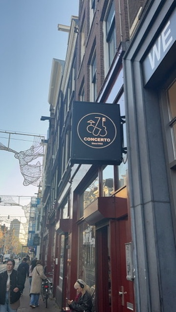
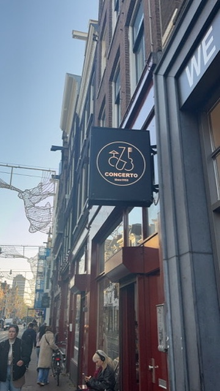
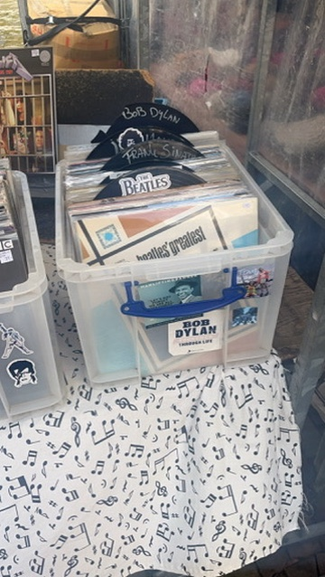

Locations
The places to be.
 "

"

Concerto
Utrechtsestraat 54- 60, 1017 VP Amsterdam
Concerto is the biggest record store in the Netherlands, along with their huge collection of new vinyl and CD's they also have multiple big second hand sections in the store, selling both second hand vinyl records and CD's for cheaper affordable prices.
Waterlooplein market
Waterlooplein 2, 1011 NZ Amsterdam
Waterlooplein is home to the oldest flea market in Amsterdam, founded in 1881, the market is open every week from Monday-Saturday, and it has multiple stalls selling second hand vinyl records and CD's, this makes it a great destination to find vintage records.